Open RStudio.
Open a new R script in R and save it as wpa_6_LastFirst.R (where Last and First is your last and first name).
Careful about: capitalizing, last and first name order, and using _ instead of -.
At the top of your script, write the following (with appropriate changes):
# Assignment: WPA 3
# Name: Laura Fontanesi
# Date: 19 April 2022This week, we are going to work with the US survey dataset on public ppinion about climate change (2008-2017).
You can find the original dataset here, and more explanations about the content/coding of the variables.
I selected a few variables and prepared the dataset already, so that you can simply load it in R using the following command:
library(tidyverse)
# Load data in R
survey_data = read_csv("https://raw.githubusercontent.com/laurafontanesi/r-seminar22/master/data/ccam_modified.csv")##
## ── Column specification ────────────────────────────────────────────────────────
## cols(
## .default = col_double(),
## cause_recoded = col_character(),
## sci_consensus = col_character(),
## gender = col_character(),
## race = col_character(),
## party_x_ideo = col_character(),
## region4 = col_character(),
## employment = col_character(),
## happening_labels = col_character(),
## age_category_labels = col_character(),
## educ_category_labels = col_character(),
## income_category_labels = col_character()
## )
## ℹ Use `spec()` for the full column specifications.glimpse(survey_data)## Rows: 18,514
## Columns: 30
## $ wave <dbl> 1, 1, 1, 1, 1, 1, 1, 1, 1, 1, 1, 1, 1, 1, 1, 1,…
## $ year <dbl> 2008, 2008, 2008, 2008, 2008, 2008, 2008, 2008,…
## $ happening <dbl> 3, 2, 2, 3, 3, 2, 3, 1, 1, 3, 3, 3, 3, 3, 3, 2,…
## $ cause_recoded <chr> "natural and human", "natural and human", "natu…
## $ sci_consensus <chr> "happening", "dont know", "disagreement", "happ…
## $ worry <dbl> 3, 2, 1, 3, 3, 2, 3, 2, 1, 3, 2, 3, 3, 3, 4, 2,…
## $ harm_personally <dbl> 2, 2, 1, 2, 0, 0, 2, 3, 1, 0, 0, 1, 3, 2, 4, 2,…
## $ harm_US <dbl> 3, -1, 1, 2, 0, 0, 3, 3, 1, 0, 0, 0, 3, 2, 4, 2…
## $ harm_dev_countries <dbl> 4, 2, 1, 3, 0, 0, 4, 3, 1, 0, 0, 0, 4, 2, 4, 2,…
## $ harm_future_gen <dbl> 4, 3, 1, 3, 0, 0, 4, 3, 1, 4, 0, 0, 4, 3, 4, 3,…
## $ harm_plants_animals <dbl> 4, 3, 1, 3, 3, 0, 4, 3, 1, 4, 0, 3, 4, 2, 4, 3,…
## $ when_harm_US <dbl> 5, 3, 1, 4, 2, 2, 5, 4, 1, 3, 3, 3, 5, 4, 5, 2,…
## $ reg_CO2_pollutant <dbl> 4, 3, 2, 3, 3, 1, 3, 2, 2, 3, 3, 4, 4, 3, 3, 2,…
## $ reg_utilities <dbl> 4, 3, 1, 4, 1, 1, 2, 2, 2, 4, 3, 1, 4, 3, 2, 2,…
## $ fund_research <dbl> 4, 3, 1, 4, 4, 3, 4, 2, 3, 4, 3, 1, 3, 3, 4, 3,…
## $ discuss_GW <dbl> 3, 2, 1, 2, 1, 2, 3, 2, 3, 3, 2, 2, 2, 1, 3, 2,…
## $ gender <chr> "female", "male", "female", "male", "female", "…
## $ age_category <dbl> 3, 2, 2, 3, 1, 1, 1, 1, 2, 3, 3, 3, 3, 3, 3, 1,…
## $ educ_category <dbl> 2, 1, 4, 4, 3, 4, 4, 4, 4, 4, 2, 4, 2, 3, 2, 4,…
## $ income_category <dbl> 2, 1, 1, 3, 2, 2, 1, 2, 3, 3, 1, 1, 3, 1, 1, 3,…
## $ race <chr> "white non hisp", "white non hisp", "hisp", "wh…
## $ party_x_ideo <chr> "conservative republican", "no interest", "cons…
## $ region4 <chr> "south", "midwest", "west", "south", "south", "…
## $ employment <chr> "Not working –retired", "Not working –disabled"…
## $ happening_cont <dbl> 3.1770484, 2.3892098, 1.7235311, 4.6690941, 3.3…
## $ worry_cont <dbl> 2.4890167, 2.5616335, 1.3625589, 2.6617477, 4.2…
## $ happening_labels <chr> "yes", "dont know", "dont know", "yes", "yes", …
## $ age_category_labels <chr> "55+", "35-54", "35-54", "55+", "18-34", "18-34…
## $ educ_category_labels <chr> "highschool", "no highschool", "bachelor or hig…
## $ income_category_labels <chr> "50000-99999", "less 50000", "less 50000", "mor…In this course, we are going to use ggplot2 for plotting. You find the full ggplot2 refererence here.
Every ggplot2 graphic has three essential components:
data: the dataset containing the variables of interest.geom: the geometric object in question. This refers to the type of object we can observe in a plot. For example: points, lines, and bars.mapping: aesthetic attributes of the geometric object. They decide which variables of the dataset are shown and in which position. For example, the variables on the x- and y-axes, the variables that give the color or the size to specific elements.The basic template for a plot is:
ggplot(data = <DATA>, mapping = aes(<MAPPINGS>)) +
<GEOM_FUNCTION>()Where you would:
<DATA><MAPPINGS><GEOM_FUNCTION>Note the + notation at the end of the first line. That is to tell ggplot2 that you are still adding/changing components to/of the same plot. So, if you want to add/change other components, you would also put a + at the end of the second line and add a new function in the third line.
In the course introduction we had for example:
ggplot(data = movies, mapping = aes(x = best_pic_nom, y = audience_score, fill = best_dir_win)) +
geom_boxplot() +
labs(x = "Movie Was Nominated For A Best Picture Oscar", y = "Audience Score", fill = "Director won oscar") +
ggtitle("Relationship Between Audience Score, Movie Picture Oscar and Director Achievement")movies was the name of our dataframebest_pic_nom was the variable to show on the x-axis, audience_score on the y-axis, and best_dir_win as a colorgeom_boxplot() was the kind of plot (as boxplot in that case)labs() was to change the lables of the x- and y-axes, and of the color-legendggtitle() was to change the title of the plotSo in this case labs() and ggtitle() were additional functions to add/change components to our plot.
Their function depends on the specific plot (see below). But the main arguments are:
x: the variable on the x-axis
y: the variable on the y-axis
color/fill: the variable that determines the color to the plots’ elements
size: the variable that determines the size to the plots’ elements
shape: the variable that determines the shape of the plots’ elements
We use:
Bar plots: geom_bar() to plot one value for each level of a categorical variable x (you can also split each level according to the levels of a second categorical variable using the fill aesthetic argument). Typically, these values are frequencies (how many observations are there per level?) or means (in this case you should compute the mean of a second variable y for each level of the categorical variable x before plotting).
Box and violin plots: geom_boxplot() or geom_violin() to plot the the distribution of a continuous variable y for different levels of a categorical variable x (you can also add a third categorical variable using the fill aesthetic argument).
Histograms and density plots: geom_histogram() or geom_density() to plot the the distribution of a continuous variable x (you can also plot separate distributions based on a second categorical variable using the fill aesthetic argument).
Scatter plots: geom_point() to plot the relationship between 2 continuous variables. You can add a third variable (either continuous or categorical) using the color aesthetic argument. In case the third variable is continuous, we can also add the scale_colour_gradient function, to change the colour gradient. You can also choose to show the third variable as the size of the points instead of the colour using the size aesthetic argument. You could then show a maximum of 4 variables: 1 on the x-axis, one on the y-axis, one as colour, and one as size of the dots.
Lines: geom_abline(), geom_hline(), geom_vline(), geom_line() and geom_smooth() to plot lines (typically to show the mean of a distribution, or a regression line in a scatter plot).
Error bars: geom_errorbar() to add error bars (typically to bar plots or to line plots).
facet_grid() and facet_wrap(): to split a plot into several plots by the values of another variable.scale_colour_gradient(): to adjust the color gradient, when the color variable is continuous.ggsave(): to save the plot to file.labs(): to change the lables of the x- and y-axes, and of the color-legend.ggtitle(): to change the title of the plot.Note that each function can take additional arguments. In the example above, the labs() function took the additional x, y and fill arguments to specify which label corresponded to which variable.
Note here what happens when you write x = year instead of x = factor(year). The point is that ggplot might not understand that year is a categorical variable (see in the dataframe summery above). So, to make sure ggplot treats certain variables as categorical, you can sue the factor() function.
ggplot(data = survey_data, mapping = aes(x = factor(year), fill = age_category_labels)) +
geom_bar() +
labs(x="Year", fill="Age")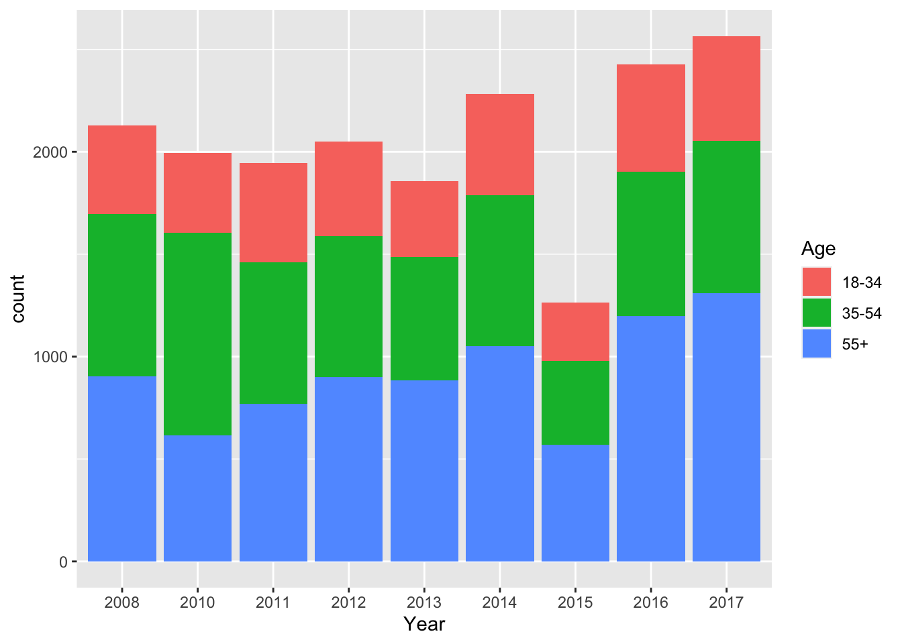
ggplot(data = survey_data, mapping = aes(x = income_category_labels, fill=gender)) +
geom_bar(position = "dodge") +
labs(x = "Income category", fill="Gender")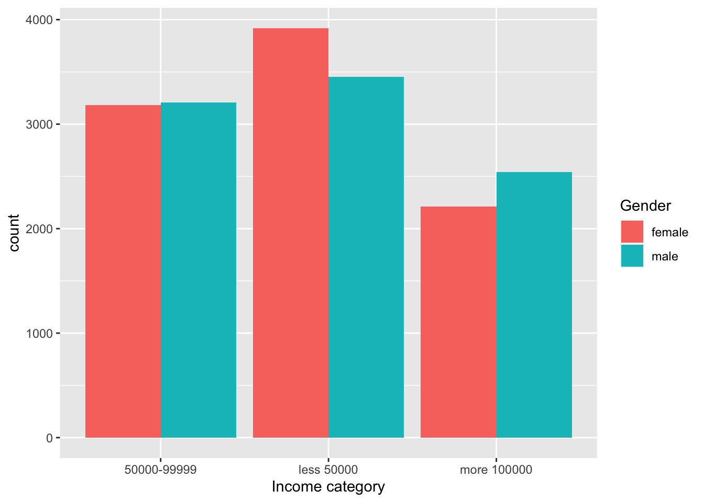
ggplot(data = survey_data, mapping = aes(x = factor(harm_future_gen), y = happening_cont)) +
geom_boxplot() +
labs(x = "Will GW harm future generations?", y='Is GW happening?')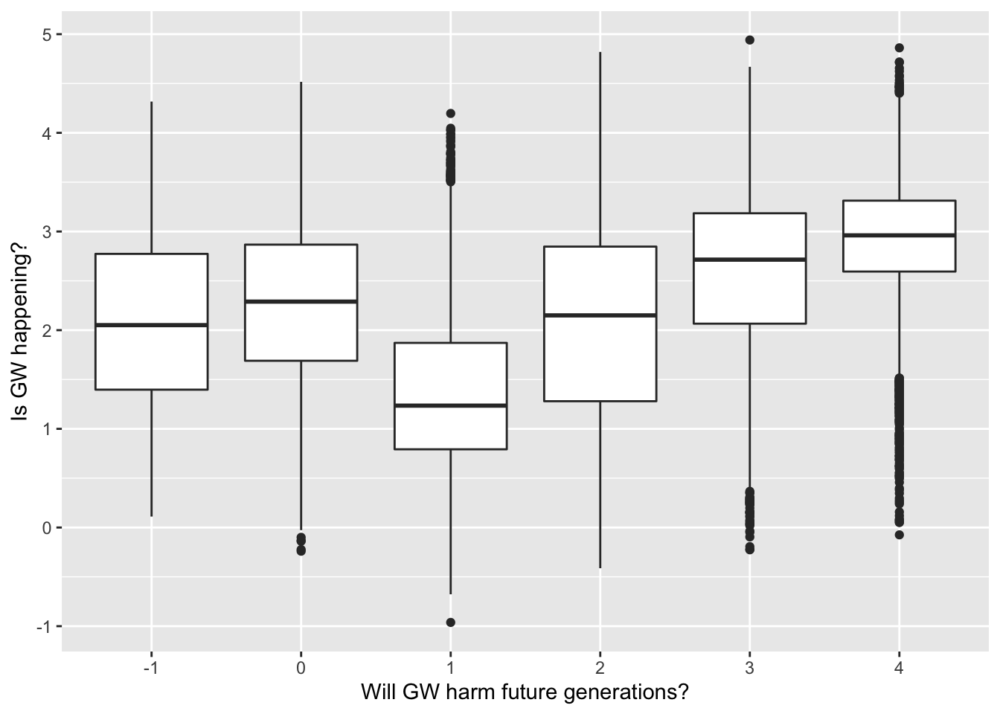
ggplot(data = survey_data, mapping = aes(x = happening_labels, y = worry_cont)) +
geom_boxplot() +
facet_grid(~ gender)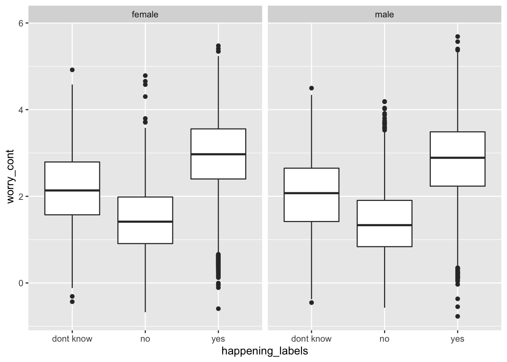
ggplot(data = survey_data, mapping = aes(x = happening_labels, y = worry_cont, fill = gender)) +
geom_boxplot()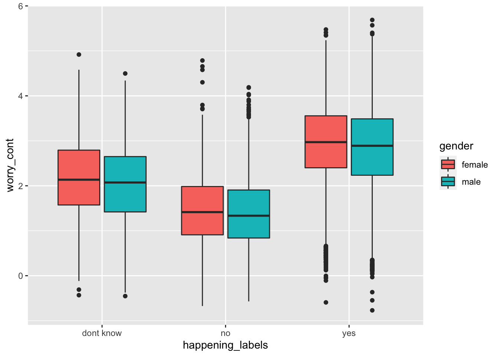
ggplot(data = survey_data, mapping = aes(x = party_x_ideo, y = worry_cont)) +
geom_violin(draw_quantiles = c(0.25, 0.5, 0.75)) +
labs(x = "Party/ideology", y='How worried of GW are you?')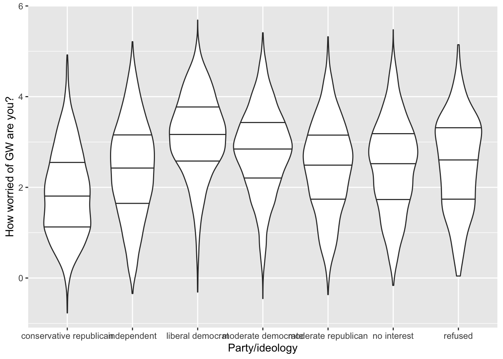
ggplot(data = survey_data, mapping = aes(x = happening_cont, y = worry_cont, shape=gender, color=gender)) +
geom_point(alpha = .3, size= 1) +
geom_vline(xintercept = mean(survey_data$happening_cont), linetype="dotted") +
geom_hline(yintercept = mean(survey_data$worry_cont), linetype="dotted") +
geom_smooth(method = lm) +
labs(x='Is GW happening?', y='How worried of GW are you?') +
ggtitle("Relationship between GW believe and anxiety, by gender")## `geom_smooth()` using formula 'y ~ x'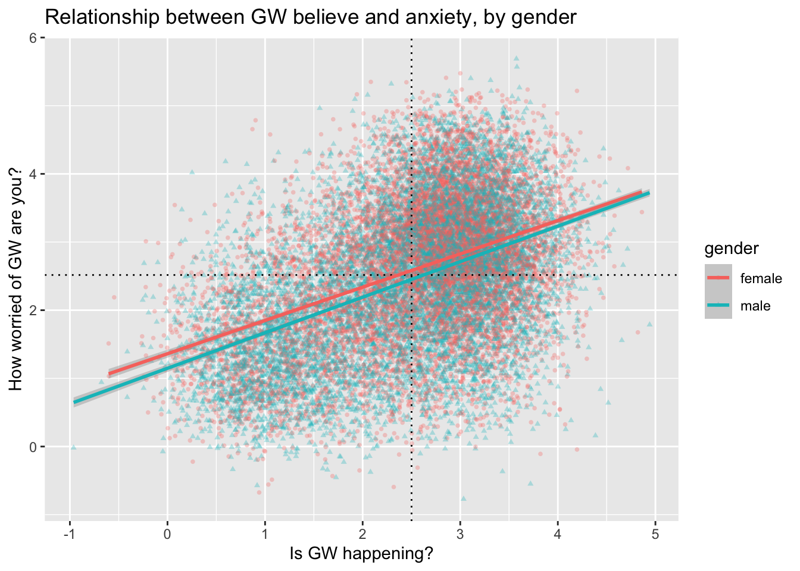
ggplot(data = survey_data, mapping = aes(x = happening_cont, fill = sci_consensus)) +
geom_histogram(binwidth=.1, alpha = .4, position="identity") +
labs(x = 'Is GW happening?', fill = 'What is the scientific consensus on GW?')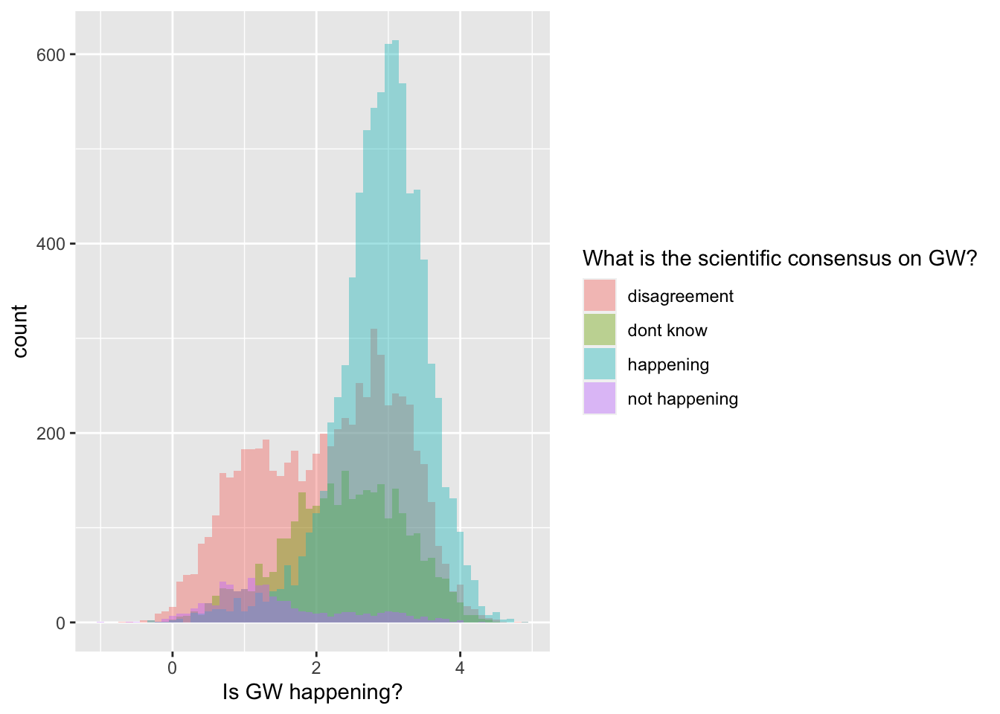
ggplot(data = survey_data, mapping = aes(x = worry_cont, fill = cause_recoded)) +
geom_density(alpha = .2) +
labs(x = 'How worried of GW are you?', fill = 'What is causing GW?')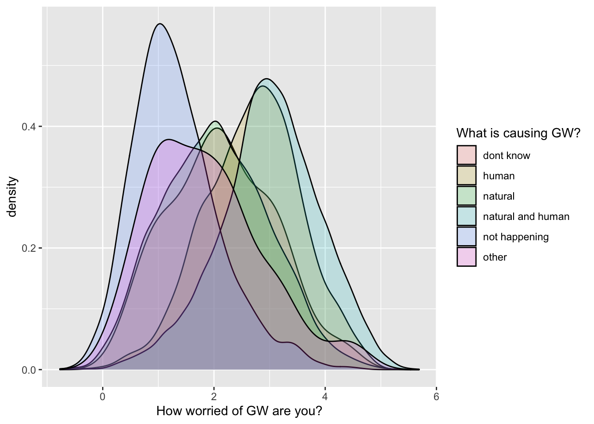
It’s a bit crowded… so I will filter the dataset to exclude a few levels of the cause_recoded variable:
filtered_survey_data = filter(survey_data,
cause_recoded != "dont know",
cause_recoded != "other")
ggplot(data = filtered_survey_data, mapping = aes(x = worry_cont, fill = cause_recoded)) +
geom_density(alpha = .2) +
labs(x = 'How worried of GW are you?', fill = 'What is causing GW?')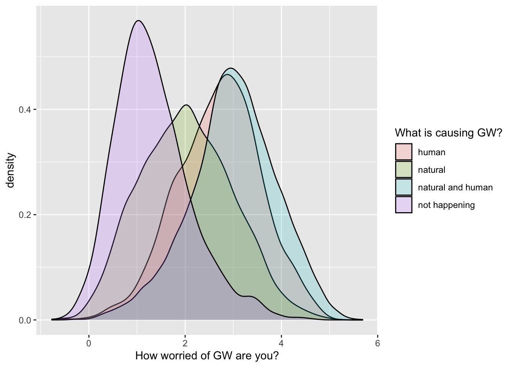
ggplot(data = filtered_survey_data, mapping = aes(x = educ_category_labels, y = worry_cont)) +
# stat_summary with arg "fun":
# A function that returns a single number, in this case the mean worry_cont for each level of educ_category_labels:
stat_summary(fun = "mean", geom = "point", size = 6) +
# mean_se( ) is intended for use with stat_summary. It calculates mean and
# standard error
stat_summary(fun.data = mean_se, geom = "errorbar", size=1.5, width=.1) +
labs(x = 'Education level', y = 'How worried of GW are you?')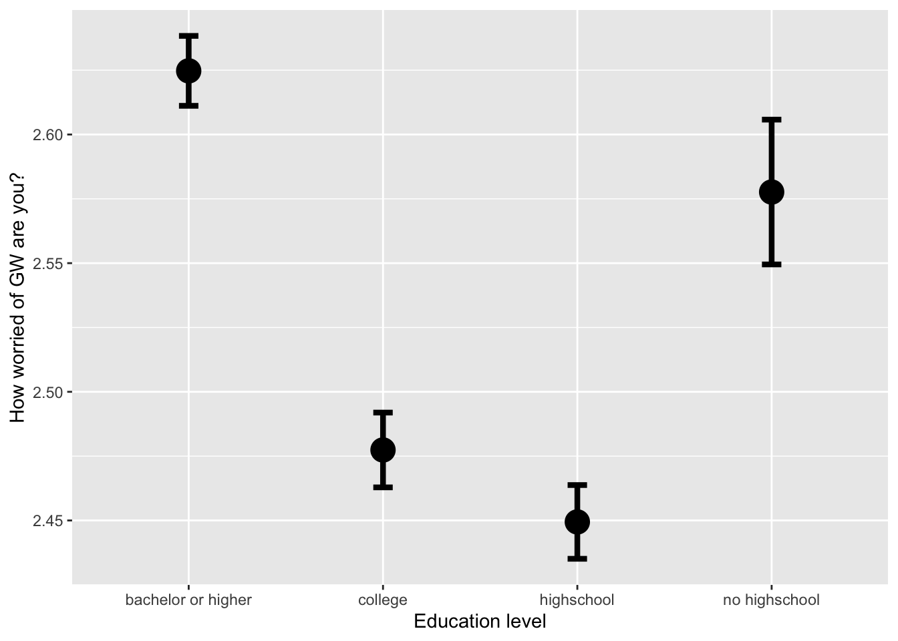
ggplot(data = filtered_survey_data, mapping = aes(x = race, y = worry_cont)) +
# stat_summary with arg "fun.y":
# A function that returns a single number, in this case the mean worry_cont for each level of cause_recoded:
stat_summary(fun = "mean", geom="bar") +
# mean_cl_normal( ) is intended for use with stat_summary. It calculates
# sample mean and lower and upper Gaussian confidence limits based on the
# t-distribution
stat_summary(fun.data = mean_cl_normal, geom = "errorbar", size=1, width=.3) +
labs(x = 'Ethnic group', y = 'How worried of GW are you?')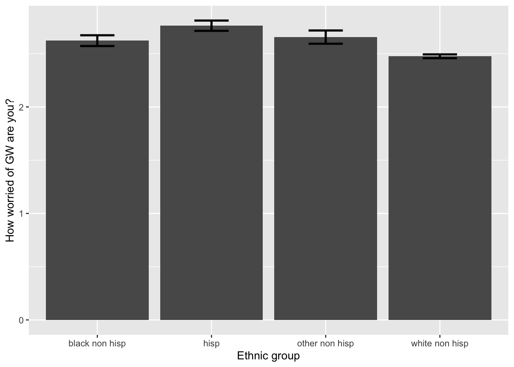
First, download the tdcs.csv datasets from the data folder on Github and load them in R.
Task A
Show the distribution of response times (RT) with a density plot, separately by the accuracy vs. speed conditions (acc_spd) using different colors of the density plots per condition. Be sure to adjust the transparency so that they are both clearly visible and put appropriate axes labels and legend title.
Show the distribution of response times (RT) with a histogram, separately by the accuracy vs. speed conditions (acc_spd) using different colors of the density plots per condition. Be sure to adjust the transparency and binwidth, so that they are clearly visible and put appropriate axes labels and legend title. This time, split it furtherly by TDCS manipulation (tdcs) using facet_grid().
Show the response times (RT) with a violinplot, separately by the place the data were collected (dataset). Split further by accuracy vs. speed conditions using colors. Add the 10%, 30%, 50%, 70%, and 90% quantiles, that are the most common in response times data analyses. Change labels appropriately.
Task B
Now, I am creating a summary of the data, where we look at mean response times and accuracy per subject, separately by coherence (how difficult the task was) and the speed vs. accuracy manipulation:
summary_tdcs_data = summarise(group_by(tdcs_data, id, coherence, acc_spd),
mean_RT=mean(RT),
mean_accuracy=mean(accuracy))
glimpse(summary_tdcs_data)Using the summarized data:
Plot the relationship between mean response times (mean_RT) and mean accuracy (mean_accuracy) using a scatterplot.
Use facet_grid to split the plot based on the speed vs. accuracy manipulation (acc_spd).
Add the regression lines.
Change with appropriate plot titles and x- and y-axes labels.
Add the coherence levels as color of the dots. Because coherence is a continuous variable and not categorical, you can use scale_colour_gradient to adjust the gradient.
Change the color of the regression lines to grey.
Task C
Using the summarized data:
Plot the mean mean_accuracy, separately by factor(coherence) using stat_summary with arguments geom="bar" and position = 'dodge'. Split further based on the accuracy vs. speed manipulation (acc_spd) with different colors.
Now add error bars representing confidence intervals and using stat_summary again with arguments width=.9, position = 'dodge'. Adjust the width argument if the error bars are not centered in each of the bars.
Do the same again, but:
Note that you do not need the position = 'dodge' here anymore, and that you might have to adjust size and width of the error bars.
Save and email your script to me at laura.fontanesi@unibas.ch by the end of Friday.